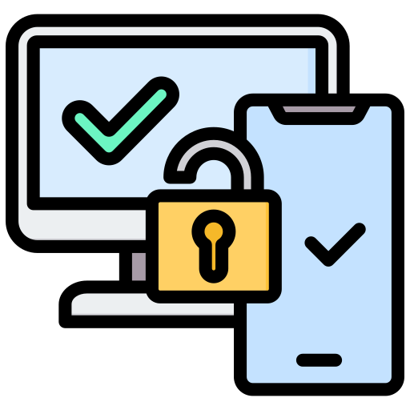

O que é cybersegurança?
Cibersegurança é o conjunto de práticas, tecnologias e processos criados para proteger computadores, redes, sistemas e dados contra acessos não autorizados, ataques e danos. Em um mundo cada vez mais digital, garantir a segurança da informação se tornou essencial para empresas, governos e usuários comuns, evitando prejuízos financeiros, vazamento de dados e invasões de privacidade. Com a crescente dependência da internet, as ameaças digitais também evoluíram. Hackers e cibercriminosos usam técnicas cada vez mais sofisticadas para explorar falhas e vulnerabilidades. Por isso, entender como a cibersegurança atua — e principalmente, quais são os riscos mais comuns — é o primeiro passo para se proteger no ambiente online.
Tipos de ameaças cibernéticas
.png)
Invasões/hackers
São ataques feitos por hackers que se aproveitam de falhas na segurança de sistemas para obter dados ou prejudicar o funcionamento.
Vírus
Programas maliciosos que se instalam em computadores sem o consentimento do usuário, podendo roubar informações ou danificar o sistema.
Phishing
Fraudes que enganam o usuário para obter dados pessoais, como senhas e números de cartões, geralmente por e-mail ou sites falsos.

Ransomware
Tipo de ataque que bloqueia o acesso aos dados da vítima e exige um resgate para liberá-los.
Ferramentas e práticas de cybersegurança:
Antivírus e firewalls
.png)
Autenticação em dois fatores (2FA)
Criptografia de dados
Backups regulares
Atualizações de software